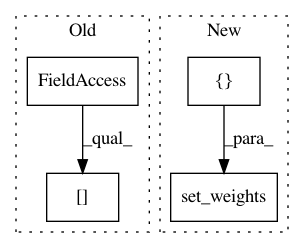

7977092d28d710ed325e4d91816fe39f504c06b8,tests/test_layer_transformer.py,,test_wider_bn,#,27
Before Change
def test_wider_bn():
bn_layer = StubBatchNormalization()
bn_layer.set_weights(get_conv_model().layers[2].get_weights())
new_bn_layer = wider_bn(bn_layer, 1, 3, 4)
assert new_bn_layer.get_weights()[0].shape[0] == 7
After Change
def test_wider_bn():
bn_layer = StubBatchNormalization()
bn_layer.set_weights([np.ones(3, dtype=np.float32),
np.zeros(3, dtype=np.float32),
np.zeros(3, dtype=np.float32),
np.ones(3, dtype=np.float32)])
new_bn_layer = wider_bn(bn_layer, 1, 3, 4)
assert new_bn_layer.get_weights()[0].shape[0] == 7
In pattern: SUPERPATTERN
Frequency: 3
Non-data size: 4
Instances
Project Name: jhfjhfj1/autokeras
Commit Name: 7977092d28d710ed325e4d91816fe39f504c06b8
Time: 2018-05-07
Author: jin@tamu.edu
File Name: tests/test_layer_transformer.py
Class Name:
Method Name: test_wider_bn
Project Name: NeuromorphicProcessorProject/snn_toolbox
Commit Name: 9b254aaf76efaa0a3789a67137c9817684862cf9
Time: 2019-07-11
Author: bodo.rueckauer@intel.com
File Name: snntoolbox/simulation/target_simulators/loihi_target_sim.py
Class Name: SNN
Method Name: build_dense